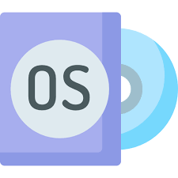
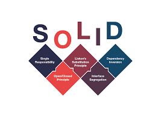
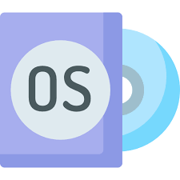
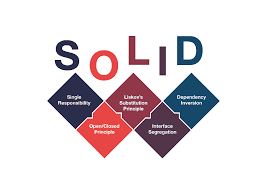

My Skills
Basics


Languages


Computer Fundamentals
 



Tools


Soft Skills
Event management
I participated in club activities and managed all technical and cultural fest events as a volunteer. This experience enhanced my organizational skills and teamwork, allowing me to contribute effectively to event planning and execution while fostering a vibrant community atmosphere.
Communication
Effective communication is a vital soft skill that I have honed through leadership roles, enabling me to convey ideas clearly and engage team members effectively. This skill has been instrumental in fostering collaboration, resolving conflicts, and motivating others, ensuring that goals are met while maintaining a positive team dynamic.
Leadership
As a core team member of the Startup and Development team at E-cell NITA, I have developed strong leadership skills by organizing and conducting various events. This role has enhanced my ability to lead projects, collaborate with team members, and inspire others to foster innovation and entrepreneurship within the community.